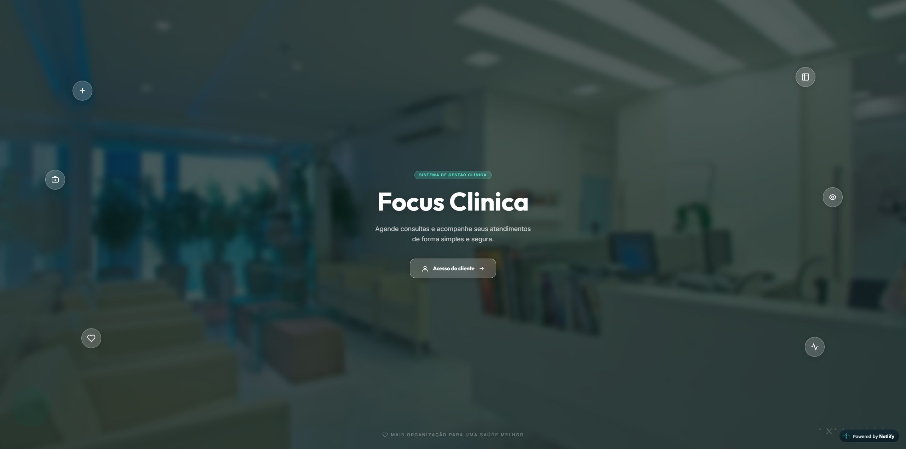
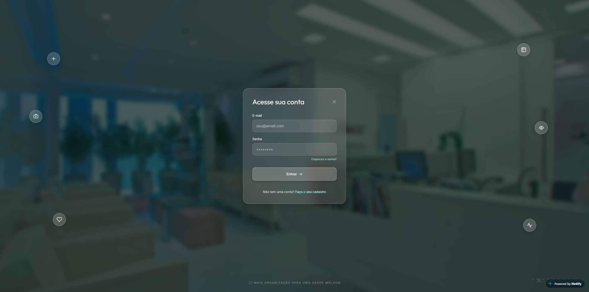

Gestão clínica com mais clareza
Mais organização.
Mais foco no cuidado.
Conheça o Focus Clínica: um sistema para organizar agendas, acompanhar agendamentos e acessar as informações da rotina clínica.
Para clínicas, gestores e profissionais da saúde.

01 / Sobre o Focus
A rotina da clínica
vista com mais clareza.
Organizar uma clínica passa por acompanhar agendas, consultas e informações do atendimento. O Focus Clínica reúne funcionalidades voltadas a esse dia a dia em um sistema de gestão clínica.
Esta página apresenta o sistema para que sua equipe conheça suas possibilidades e encontre o caminho de acesso à plataforma.
Explore os recursos02 / Funcionalidades
Cada parte da rotina,
em seu lugar.
Conheça os recursos que fazem parte da proposta do Focus Clínica.
03 / Benefícios
Uma gestão organizada
abre espaço para
o que importa.
Praticidade para quem acompanha a clínica. Clareza para quem precisa encontrar informações.
Conhecer a plataforma- 01
Organização da rotina
Uma referência para acompanhar agendas e informações dos agendamentos.
- 02
Praticidade no dia a dia
Recursos de gestão clínica apresentados em uma interface de acesso direto.
- 03
Informações mais acessíveis
Calendário, notificações e especialidades como apoio ao acompanhamento dos atendimentos.
04 / Por dentro do Focus
Veja o sistema
de perto.
Capturas reais das telas públicas do Focus Clínica. Selecione uma tela para explorar.

Ampliar capturaImagens obtidas do sistema de referência. O acesso à plataforma abre em uma nova aba.
Seu próximo passo
Conheça uma nova forma
de organizar sua rotina.
Explore o Focus Clínica e descubra os recursos da plataforma.